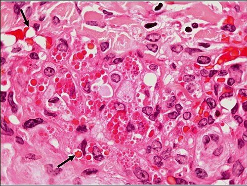

Información divulgativa. No sustituye la valoración de tu equipo médico ni sirve para decidir un tratamiento.


En resumen
| Causa | Herpesvirus humano 8 (HHV-8 o KSHV) con un sistema inmune debilitado |
| Formas | Clásica (hombres mayores mediterráneos), asociada al VIH, endémica africana, en trasplantados |
| Aspecto | Manchas o nódulos violáceos en piel, boca, piernas; puede afectar a órganos |
| Tratamiento | Tratamiento antirretroviral, reducir inmunosupresión; quimioterapia (doxorrubicina liposomal, paclitaxel), pomalidomida |
Qué es
Lo describió el dermatólogo húngaro Moritz Kaposi en 1872 en hombres mayores. En 1981, su aparición en hombres jóvenes en Nueva York y California fue una de las primeras señales del sida. En 1994 Yuan Chang y Patrick Moore descubrieron el virus que lo causa, el HHV-8.
Formas
- Clásica: en hombres mayores de origen mediterráneo, judío o de Europa del Este; lesiones en piernas de evolución muy lenta.
- Asociada al VIH (epidémica): más extensa y agresiva; ha disminuido mucho gracias a los antirretrovirales.
- Endémica: en África subsahariana, incluso en niños.
- Iatrogénica: en trasplantados o con tratamiento inmunosupresor.
Tratamiento
- VIH: el tratamiento antirretroviral solo hace desaparecer muchas lesiones.
- Trasplantados: reducir la inmunosupresión o cambiar a sirolimus.
- Lesiones localizadas: radioterapia, crioterapia, láser, alitretinoína tópica, vinblastina intralesional o cirugía.
- Enfermedad extensa: doxorrubicina liposomal, paclitaxel, pomalidomida.
Pronóstico
La forma clásica rara vez acorta la vida. En personas con VIH bien tratado, la supervivencia es buena; la afectación pulmonar o digestiva extensa es más grave.
Ver también: Angiosarcoma, Linfomas.
Historia · Medicapedia
Sarcoma de Kaposi en la historia de la medicina
Cómo se descubrió, quién lo investigó y cómo cambió su tratamiento a lo largo de los siglos, contado en Medicapedia, nuestra web hermana de historia de la medicina.
Leer la historia en Medicapedia ↗Fuentes
- Lebbe C, et al. Diagnosis and treatment of Kaposi's sarcoma: European consensus-based interdisciplinary guideline (EDF/EADO/EORTC). Eur J Cancer. 2019;114:117-127.
- Chang Y, et al. Identification of herpesvirus-like DNA sequences in AIDS-associated Kaposi's sarcoma. Science. 1994;266:1865-1869. doi:10.1126/science.7997879
- NCI. Sarcoma de Kaposi (PDQ). cancer.gov/espanol/tipos/sarcoma-de-kaposi